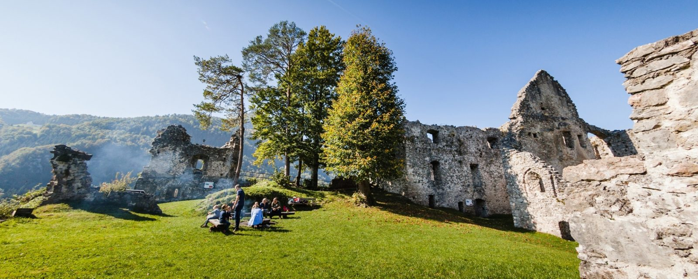
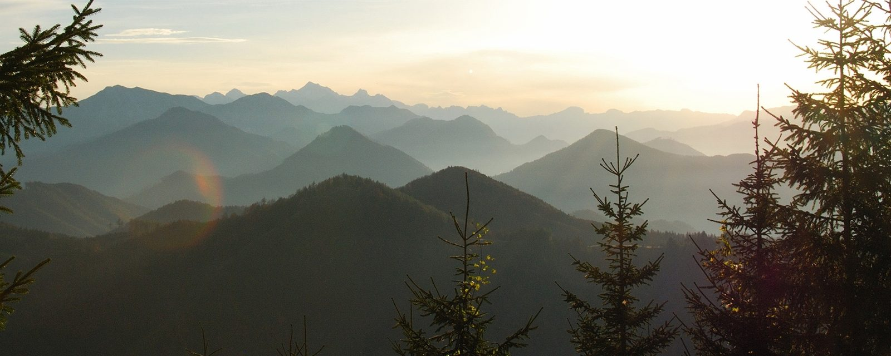

Erwachsene
€ 25,– pro Person und Tag
Ab einem Aufenthalt von zwei Nächten buchbar, mit Wahlmöglichkeit aus dem 3-Gang-Menü.
Zwei ausgearbeitete Pauschalen für die Nationalpark-Region Ennstal – und neu: ein Gutschein, der sich ohne Anruf bestellen lässt.

Malerische Almböden, rauschende Bäche, artenreiche Kulturlandschaft – im größten Waldschutzgebiet Österreichs.
Berührende und unberührte Wildnis und klares Wasser, ursprüngliche Almwirtschaft und historisches Erbe: In Steyr und der Nationalpark-Kalkalpen-Region verschmelzen Natur und Kultur. Dazu gehört auch das UNESCO-Weltnaturerbe Buchenwälder.
Geführte Nationalpark-Touren mit Ranger, Naturschauspiele, Angebote von E-Mobility, Geoventure, Floss Dirninger, Schifffahrt Aigner, Pro Adventures und weitere – veröffentlicht über Veranstaltungskalender, Wochenprogramm und Sommerprogramm. Wir helfen gerne beim Zusammenstellen.
Anforderung: ausreichend Kondition für mehrstündige Wanderungen.

Pilgern in der Nationalpark-Region OÖ Ennstal: Erwandern Sie sich in vier Tagesetappen zu je etwa 20 km die oberösterreichischen Voralpen.
Zeit nehmen, innehalten, zur Ruhe kommen – wandern mit leichtem Gepäck durch die Naturlandschaft und zu den kulturellen und historischen Sehenswürdigkeiten der Region. Der Sebaldusweg ist nicht nur Pilgerweg: Entlang der Strecke finden sich 7 Kirchen, 3 Wallfahrtskirchen, 30 Kapellen, die Museen der Eisenwurzen und unzählige Naturschätze. Höhepunkt ist der Besuch der Kirche am Heiligenstein in Gaflenz, die dem Hl. Sebald – dem Namensgeber des Weges – geweiht ist.
Zur Strecke gibt es eine Beschreibung samt GPS-Download.
€ 25,– pro Person und Tag
Ab einem Aufenthalt von zwei Nächten buchbar, mit Wahlmöglichkeit aus dem 3-Gang-Menü.
€ 16,– pro Kind und Tag
Gleiche Bedingungen wie bei Erwachsenen; Kinderportionen selbstverständlich.
Bisher gab es Gutscheine nur telefonisch oder vor Ort. Mit diesem Formular wählen Sie Betrag oder Leistung, wir schreiben den Gutschein aus und schicken ihn per Post oder halten ihn zur Abholung bereit.
Mögliche Varianten: Wertgutschein, Nächtigung mit Frühstück für zwei Personen, Halbpension oder ein Abend im Gasthaus.